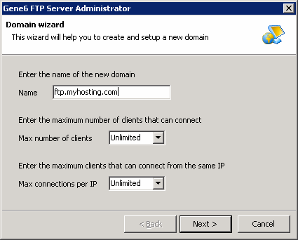
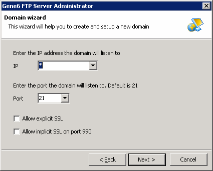
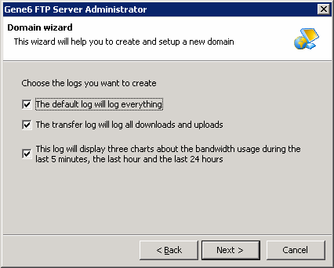
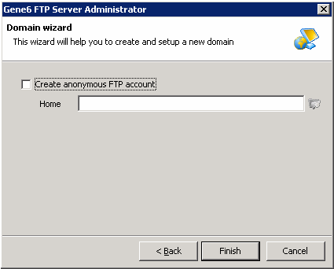
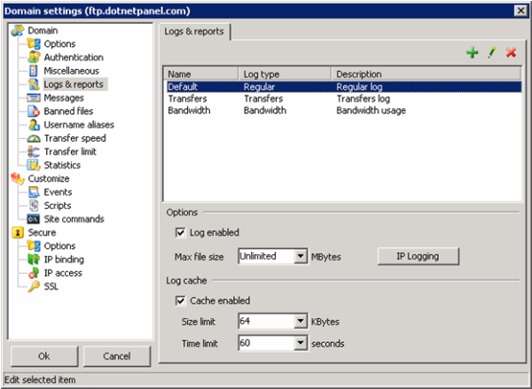
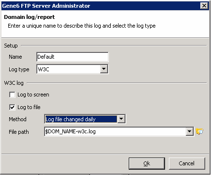
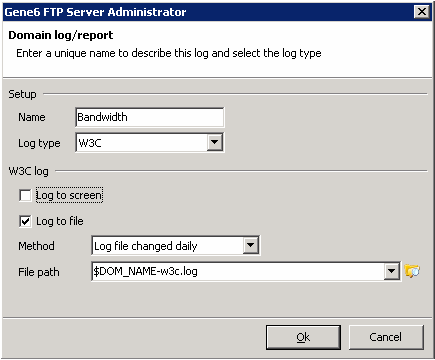

Gene6 FTP Installation and Configuration
Translations:
Configuring Gene6 FTP Server
First of all, you should choose a domain name and, if you like, limit the maximum number of clients and connections:

Secondly, you should select the IP address of your new domain. By default it is * (all IP addresses). It is allowed to bind all available IP addresses to that domain. Additionally, you can change default FTP port 21 to some other. Also, you may allow SSL connections.

Select all types of logs on the next step:

To make your server more secure uncheck anonymous FTP account option. Then click ‘Finish' to complete domain creation wizard.

Now you see ‘Domain settings' window. Click ‘Logs & reports' node. By default, Gene6 FTP ServerTM uses its own log-file format. Highlight ‘Default' log and click "Edit" button (‘pencil' icon) or double click on this line.

Select "W3C" log type and "Log file changed daily" method. Uncheck ‘Log to screen' option. Then click ‘Ok' to save changes.

Apply settings above for "Transfers" and "Bandwidth" log types:
